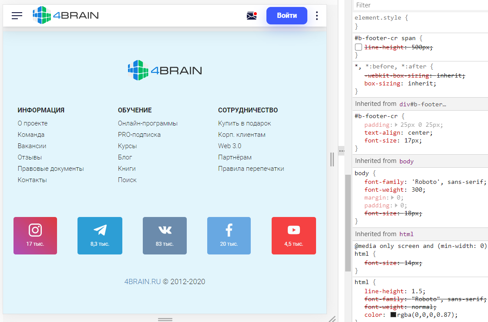

Задание 1. Верстка
Почему внизу этой страницы слишком большие отступы от соцсетей от низа страницы до «4BRAIN.RU © 2012-2020». Что поменять в коде, чтобы сделать их меньше?
Решение:

Необходимо удалить line-height: 500px для селектора #b-footer-cr span
Из этого:
#b-footer-cr span {
line-height: 500px;
}
Сделать это(или просто удалить этот селектор):
#b-footer-cr span {
}
Задание 2. Дизайн
Сверстайте html+css аккуратную форму опроса с подсчётом голосов (как в vk). После выбора ответа показывается, сколько людей проголосовало за каждый вариант в процентах и всего. Бэкэнд не нужен, нужен только внешний вид формы и переключение вида (выберите вариант => результаты)
Кто вы?
- Интроверт
- Экстраверт
- Не знаю
Решение:
Задание 3. FRONTEND
Расскажите, что нужно поменять в коде, чтобы select раскрывался с одного клика, а не с двух. http://archives.materializecss.com/0.100.2/forms.html#select
Решение:
Если бы прям очень надо было, я бы поковырялся и разобрался. Но я бы не использовал materializecss 0.100.2 версии, в котором есть такой функционал, а использовал бы версию 1
Вот пример с Materialize.css актуальной версии